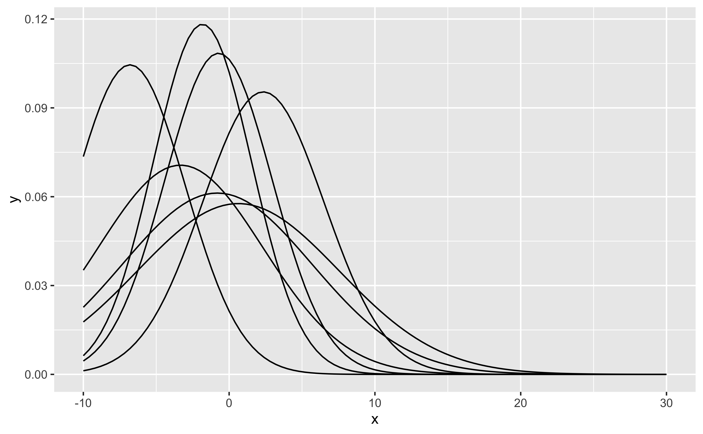
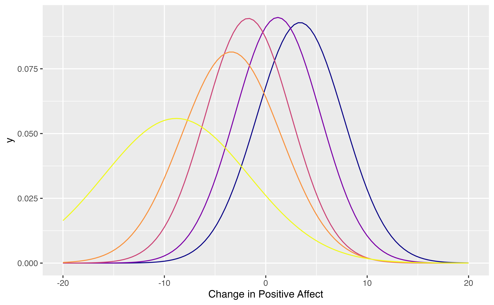
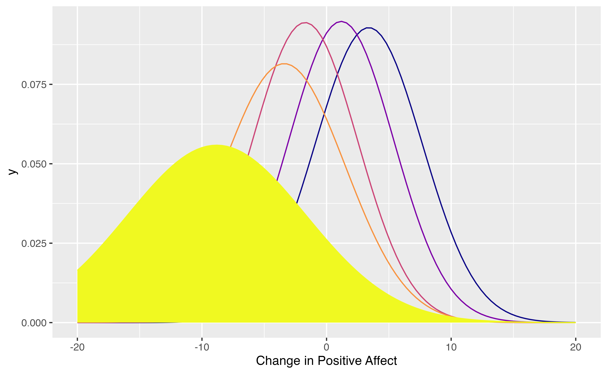

score-based-tests.RmdLoad affect dataset from the psychTools package. These are data from two studies conducted in the Personality, Motivation and Cognition Laboratory at Northwestern University to study affect dimensionality and the relationship to various personality dimensions. In the following code, we replace the numeric film labels with the movie titles. Also, we select a subset of predictors including the film, personality dimensions, trait anxiety and affect before having watched the movie.
library(psychTools) data(affect) affect$Film <- factor(affect$Film, ordered = FALSE, labels=c("Frontline", "Halloween", "Nat. Geographic","Parenthood")) tree.data <- affect[,c("Film","neur","ext","soc","traitanx","NA1","PA1")] tree.data$DeltaPA <- affect$PA2-affect$PA1 knitr::kable(head(tree.data))
| Film | neur | ext | soc | traitanx | NA1 | PA1 | DeltaPA |
|---|---|---|---|---|---|---|---|
| Nat. Geographic | 9 | 18 | 10 | 24 | 2 | 26 | -19 |
| Nat. Geographic | 12 | 16 | 8 | 41 | 4 | 10 | -5 |
| Nat. Geographic | 5 | 6 | 1 | 37 | 2 | 4 | -1 |
| Nat. Geographic | 15 | 12 | 6 | 54 | 0 | 1 | -1 |
| Nat. Geographic | 2 | 14 | 6 | 39 | 13 | 7 | 9 |
| Frontline | 15 | 6 | 4 | 51 | 1 | 5 | -3 |
Here, we create a simple SEM with a single observed variable. No latent variables - only two parameters: mean of DeltaPA and variance of DeltaPA.
library(OpenMx) #> OpenMx may run faster if it is compiled to take advantage of multiple cores. manifests<-c("DeltaPA") latents<-c() model <- mxModel("Simple Model", type="RAM", manifestVars = manifests, latentVars = latents, mxPath(from="one",to=manifests, free=c(TRUE), value=c(1.0) , arrows=1, label=c("mu") ), mxPath(from=manifests,to=manifests, free=c(TRUE), value=c(1.0) , arrows=2, label=c("sigma2") ), mxData(tree.data, type = "raw") ); result <- mxRun(model) #> Running Simple Model with 2 parameters summary(result) #> Summary of Simple Model #> #> free parameters: #> name matrix row col Estimate Std.Error A #> 1 sigma2 S DeltaPA DeltaPA 27.90300741 2.1722417 #> 2 mu M 1 DeltaPA 0.09514715 0.2907414 ! #> #> Model Statistics: #> | Parameters | Degrees of Freedom | Fit (-2lnL units) #> Model: 2 328 2034.982 #> Saturated: 2 328 NA #> Independence: 2 328 NA #> Number of observations/statistics: 330/330 #> #> Information Criteria: #> | df Penalty | Parameters Penalty | Sample-Size Adjusted #> AIC: 1378.9818 2038.982 2039.018 #> BIC: 132.8794 2046.580 2040.236 #> CFI: NA #> TLI: 1 (also known as NNFI) #> RMSEA: 0 [95% CI (NA, NA)] #> Prob(RMSEA <= 0.05): NA #> To get additional fit indices, see help(mxRefModels) #> timestamp: 2021-04-28 20:12:17 #> Wall clock time: 0.05037498 secs #> optimizer: SLSQP #> OpenMx version number: 2.19.5 #> Need help? See help(mxSummary)
Use score-based tests to create the tree. Use Bonferroni-correction to adjust for multiple testing of predictors.
library(semtree) ctrl = semtree.control( method="score", bonferroni = TRUE)
tree = semtree( model = result, data = tree.data, control=ctrl) #> ✔ Tree construction finished [took 2s].
Now let us plot the tree.
plot(tree)

Implied mixture model:
tndata <- semtree::getTerminalNodes(tree) cols <- viridis::plasma(nrow(tndata)) #> Registered S3 method overwritten by 'ggplot2': #> method from #> print.element sets #> Warning: replacing previous import 'vctrs::data_frame' by 'tibble::data_frame' #> when loading 'dplyr' pl <- ggplot2::ggplot(data = data.frame(x = c(-20, 20)), ggplot2::aes(x))+ ggplot2::xlab("Change in Positive Affect") for (i in 1:nrow(tndata)) { pl <- pl + ggplot2::stat_function(fun = dnorm, n = 101, col=cols[i], args = list(mean = tndata[i,2], sd = sqrt(tndata[i,1]))) } plot(pl)

Let’s inspect the group with the largest negative change:
i <- which.min(tndata$mu) pl <- pl +ggplot2::geom_area(stat = "function", fun = function(x){dnorm(x,mean=tndata[i,2],sd=sqrt(tndata[i,1]))}, fill = cols[i])+ ggplot2::geom_label(x=-10,y=.12, label="People with very high positive \naffect, which then watched\n a war film") plot(pl)
